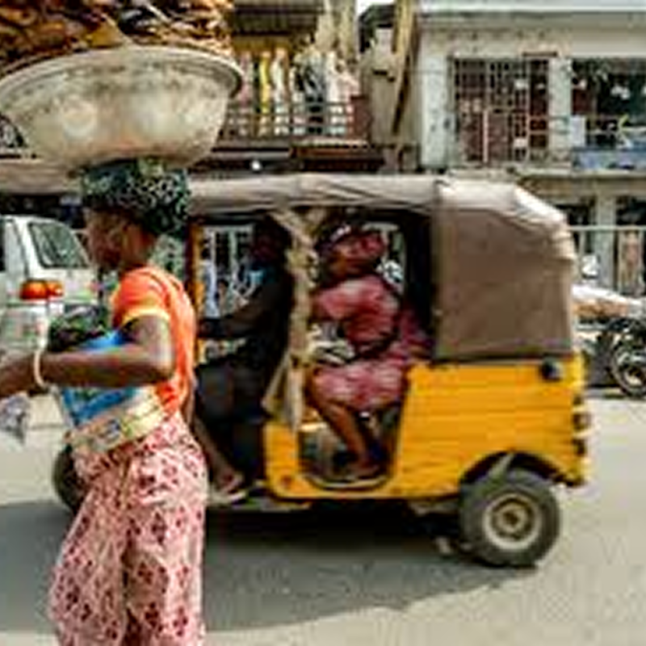

Coolest Things About Lagos

Maruwa
Maruwa are the popular yellow tricycles in Lagos, offering a quick and affordable way to navigate the city's busy streets.

Oja
Lagos markets are always packed and bustling, filled with vibrant energy, colorful stalls, and the lively sounds of bargaining shoppers.

Ogede
Ogede translates to Banana in Yoruba. You can get fresh plantain chips off street peddlers in Lagos almost anytime.